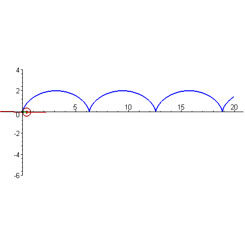

Index
What are TNB frames?
Curvature
- It is a measure of a curve's failure to become a line.
- The more 'curvy' the curve, the larger the curvature. It is denoted by \(\kappa\)
- It is the change of the tangent vector with respect to the arc length.
\[\kappa = \left|\left| \frac{d\vec{T}}{ds} \right|\right|=||T'(s)||= \frac{T'(t)}{||r'(t)||} = \frac{||r' \times r''||}{||r'||^3}\]
Torsion
- It is a measure of a curve's failure to be contained within a plane.
\[\tau = \frac{(\vec{r}' \times \vec{r}'') \cdot \vec{r}'''}{||\vec{r} \times \vec{r}''||} = -\frac{d\vec{B}}{ds} \cdot \vec{N}\]

- The animation shows an oscillating circle. It kisses the curve at just one point.
- The plane that contains the oscillating circle (the oscillating plane) must contain \(\vec{T}\) and \(\vec{N}\) (\(\vec{B}\) is normal to the plane).
- The plane that contains \(\vec{N}\) and \(\vec{B}\) is called the normal plane, it is perpendicular to \(\vec{T}\).
Vector Functions
Differenciating Multivariable Functions